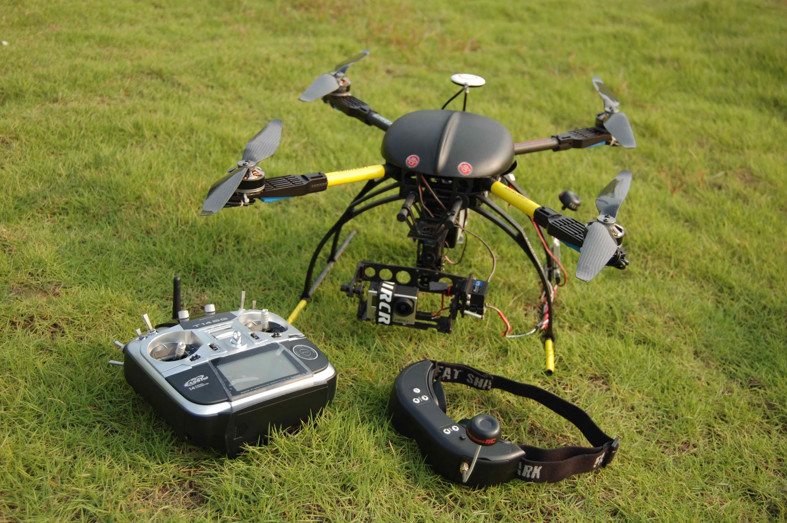

Типы и цели БПЛА
Существуют разные типы БПЛА, из которых можно выделить самые применяемые:
Беспилотные летательные аппараты (БПЛА) самолётного типа, такие как беспилотные самолеты, предназначены для долгосрочных миссий и разведки. Их управление осуществляется изменением углов атаки и управлением подвижными частями крыльев.
Квадрокоптеры, с другой стороны, оборудованы четырьмя моторами и обладают высокой маневренностью. Управление ими происходит путем регулировки оборотов моторов для изменения направления и угла наклона. Квадрокоптеры часто используются для аэросъемки, наблюдения и других развлекательных или промышленных целей. Мы будем рассматривать квадракоптеры, в следствии их высокой популярности в обществе.
Квадрокоптеры, получившие широкую популярность, применяются в различных областях, что делает их ключевыми инструментами в современном мире. В сфере доставки, они реализуют бесконтактное доставление товаров, что пользуется популярностью в городах, где доставка по улицам может быть слишком долгой. В медицине квадрокоптеры активно используются для быстрой транспортировки медицинских принадлежностей и даже органов для трансплантации, улучшая реакцию в срочных ситуациях.
Спасательные службы находят в них надежных помощников, применяя квадрокоптеры для эффективного поиска и спасения людей, а также для проведения картографических работ. В сельском хозяйстве они предоставляют точные данные о состоянии почвы и растений, способствуя улучшению сельскохозяйственных процессов.
В кинопроизводстве квадрокоптеры обеспечивают новые ракурсы и динамичность кадрам, а в обеспечении безопасности и наблюдении они стали важным средством мониторинга за транспортом, мероприятиями и границами.
Беспилотные летательные аппараты (БПЛА) самолётного типа, такие как беспилотные самолеты, предназначены для долгосрочных миссий и разведки. Их управление осуществляется изменением углов атаки и управлением подвижными частями крыльев.
 |
 |
Квадрокоптеры, получившие широкую популярность, применяются в различных областях, что делает их ключевыми инструментами в современном мире. В сфере доставки, они реализуют бесконтактное доставление товаров, что пользуется популярностью в городах, где доставка по улицам может быть слишком долгой. В медицине квадрокоптеры активно используются для быстрой транспортировки медицинских принадлежностей и даже органов для трансплантации, улучшая реакцию в срочных ситуациях.
Спасательные службы находят в них надежных помощников, применяя квадрокоптеры для эффективного поиска и спасения людей, а также для проведения картографических работ. В сельском хозяйстве они предоставляют точные данные о состоянии почвы и растений, способствуя улучшению сельскохозяйственных процессов.
В кинопроизводстве квадрокоптеры обеспечивают новые ракурсы и динамичность кадрам, а в обеспечении безопасности и наблюдении они стали важным средством мониторинга за транспортом, мероприятиями и границами.
 Квадрокоптеры используют принципы аэродинамики и механики для уникальных возможностей в трехмерном пространстве. Каждый из четырех моторов отвечает за подъемную силу, регулируя угол установки для вертикального взлета и удержания в воздухе. Регулирование оборотов моторов контролирует высоту полета.
Квадрокоптеры используют принципы аэродинамики и механики для уникальных возможностей в трехмерном пространстве. Каждый из четырех моторов отвечает за подъемную силу, регулируя угол установки для вертикального взлета и удержания в воздухе. Регулирование оборотов моторов контролирует высоту полета.